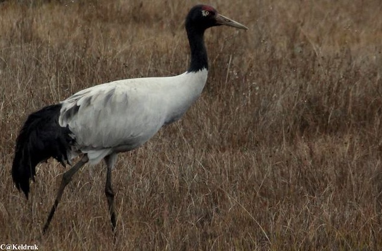
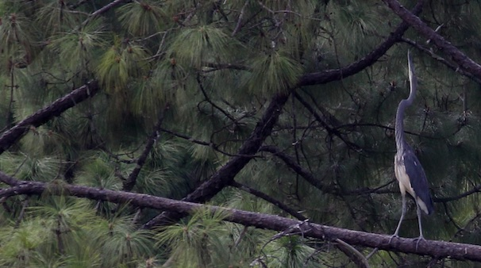

Wangdue Phodrang
Wangdue Phodrang is a district which is three hours drive away from Thimphu. The highway between Thimphu and Wangdue Phodrang is one of the favourite places for tourists to do road biking. Other places of interest to tourists are:
- Wangdue Tshechu:
- Phobjikha:
- Birdwatching along Punatsangchu:
It is an annual religious festival which lasts for three days. Buddhist mask dances and traditional dances are performed. Colorful Bhutanese textiles and performing arts will be on display during such cultural festivals.
Phobjikha is a wintering place for Black Necked Cranes, a vulnerable species numbering only 4000 individuals. Bhutanese people revere these birds and a crane festival is held at Phobjikha every year.
Birders from all over the world flock to Phobjikha during winter to see the cranes arrive from Tibet.
The banks for the Punatsangchu river in Wangdue Phodrang is a favourite place for birders. It is home to many species of birds. The most famous of all being the White-Bellied Heron.
White-bellied heron is a critically endangered species. Only 250 individuals are estimated to be left in the world, out of which 30 individuals are found in Bhutan. They are protected and their nesting place is left undisturbed.